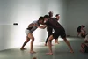

Takamura ha Shindō Yōshin Ryū

Kleine besondere Gruppe
Traditionelle Kampfkunst mit Struktur
Die Sparte soll bewusst konzentriert und ruhig auftreten: nicht als Massenangebot, sondern als traditionelle Kampfkunst mit besonderer Struktur und langem Lernweg.
Herkunft
Shindō Yōshin Ryū
Shindō Yōshin Ryū wurde von Katsunosuke Matsuoka (1836-1898) entwickelt und 1864 gegründet. Es ist ein sōgō bujutsu, also eine integrierte Kampfkunst, die die Lehren verschiedener Schulen verbindet.
Shindō Yōshin Ryū legt Wert auf ausgeklügelte Körpermechanik und natürliche Bewegung.

Linie
Takamura ha Shindō Yōshin Ryū
Weltweit gibt es nur noch eine Familienlinie, die Shindō Yōshin Ryū allumfassend nach dem Lehrplan der japanischen Kriegerklasse lehrt. Diese Linie heißt Takamura ha Shindō Yōshin Ryū und wurde von Yukiyoshi Takamura (1928-2000) gegründet.
Nach Takamura Senseis Tod leitet Tobin E. Threadgill seit 2003 die Schule und lehrt die Kampfkunst weltweit.

Training und Einstieg
Shoden, Chuden, Joden
Im Takamura ha Shindō Yōshin Ryū gibt es drei Lehrplanstufen: Shoden, Chuden und Joden. Aufgrund des sehr umfangreichen Lehrinhaltes, auch mit verschiedenen Waffen, ist das Trainingsangebot hauptsächlich für Erwachsene geeignet.